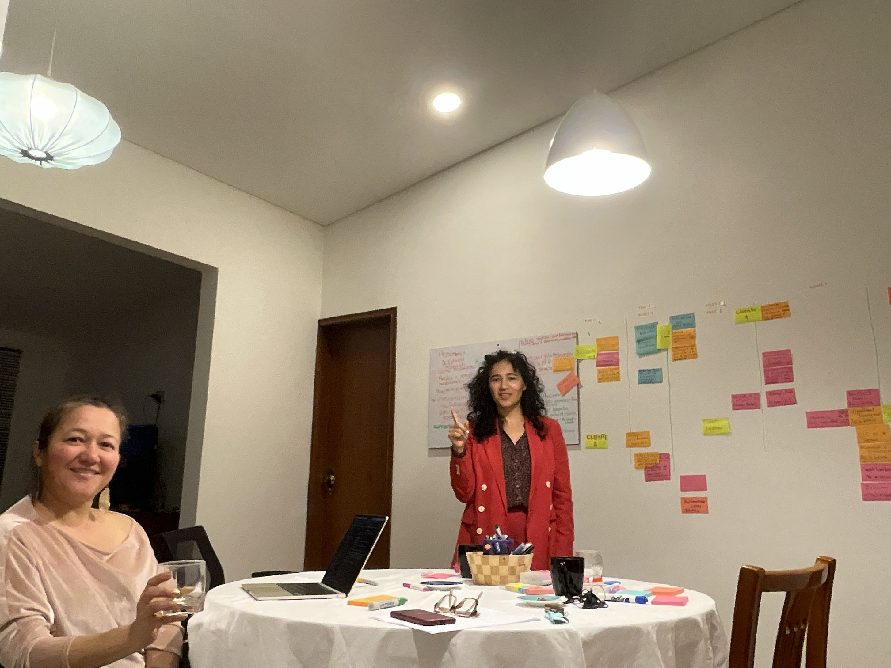

Multinationale Technologie
Post-Fusions-Integration
Erleichterung der kulturellen Integration zwischen Entwicklungsteams in Kolumbien und der Zentrale in Deutschland, Reduzierung der Flukturfrequenz um 20%.

Kultur & Führung
Stärken wir die Fähigkeiten Ihres Teams für Zusammenarbeit, Innovation und Führung in globalen Umgebungen. Wir verwandeln kulturelle und technische Vielfalt in Ihren größten Wettbewerbsvorteil.

Über Englisch oder Spanisch hinaus beziehen wir uns auf die Sprache der Zusammenarbeit. Wir erkennen und lösen diese Reibungen:
Technische (F&E) und kommerzielle Teams, die sich nicht verstehen und Innovation hemmen.
Fehlgeleitete Kommunikation und Entscheidungsfindung zwischen Niederlassungen in Lateinamerika und Europa.
Manager, die das Lokale gut managen, aber bei der Koordination von Remote- und diversen Teams leiden.
Verlust von Schlüsselpersonal aufgrund mangelnder Integration und globalem Zugehörigkeitsgefühl.
Wir verwenden keine "Standardlösungen". Wir gestalten Interventionen basierend auf der tatsächlichen Diagnose Ihrer Organisationskultur.
Verstehen der unsichtbaren Dynamiken und Kompetenzlücken.
Entwicklung von Lernpfaden und Workshops speziell für Ihre Branche.
Simulationen, Rollenspiele und Lösung realer Unternehmensfälle.
Überlassung installierter Tools, damit die Fähigkeit im Haus bleibt.
"Interkulturalität bedeutet nicht nur Sprachen zu sprechen; es ist zu verstehen, wie Vertrauen in verschiedenen Breitengraden aufgebaut wird."

Marcela Sánchez
Master in Interkultureller Bildung (Berlin)
Von punktuellen Workshops bis hin zur tiefgreifenden Transformation.
Schnelle Lösung für spezifische Lücken.
Kontinuierliches Programm für mittlere und obere Führungskräfte.
Tiefgehende Beratung für große Veränderungen.
Post-Fusions-Integration
Erleichterung der kulturellen Integration zwischen Entwicklungsteams in Kolumbien und der Zentrale in Deutschland, Reduzierung der Flukturfrequenz um 20%.
Interdisziplinäre Innovation
Programmgestaltung, damit Wissenschaftler und Administratoren gemeinsam neue Serviceportfolios schaffen und historische Silos durchbrechen.
Angepasste Führung
Training von Projektmanagern im Management von Remote-Teams und assertiver Kommunikation für sozialen Wandel.
Vereinbaren Sie eine kostenlose 30-minütige Sitzung zur Bewertung der interkulturellen Reife Ihres Teams.